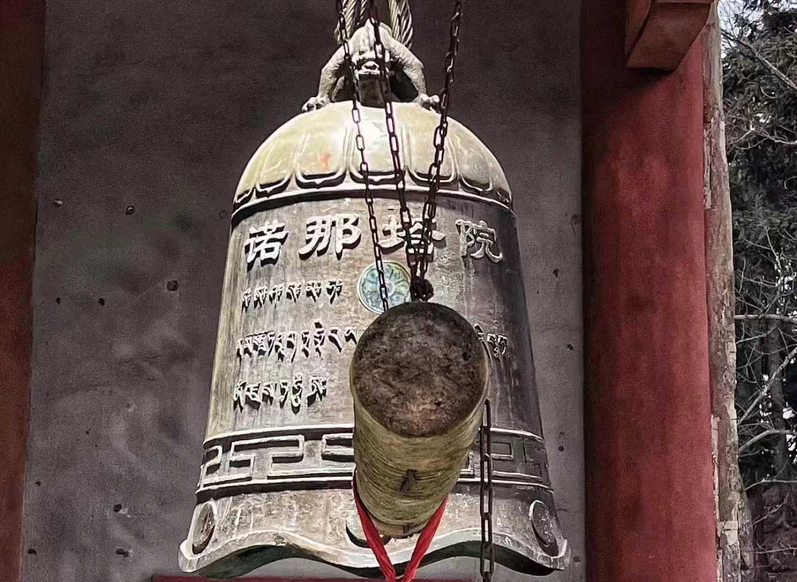

1
Chant and Pray
There is a strict ritual before making Thangka, including incense burning, mantra holding and chanting
2
Canvas Selection
The canvas is generally white and milky white cotton cloth
,which shall be clean without damage
3
Making Frames
Follow the shape of the Chinese character '之'
Stretch the canvas on the frame
4
Brushing and Polishing
Brush the canvas and
apply the background color
Polish the cloth surface after drying
to make it smooth and flat
5
Pens Making
Make some special brushes
to describe different parts of Thangkas
6
Pigment Blending
All pigments are prepared by hand.
They are grinded with precious mineral
and plant materials to obtain suitable colors